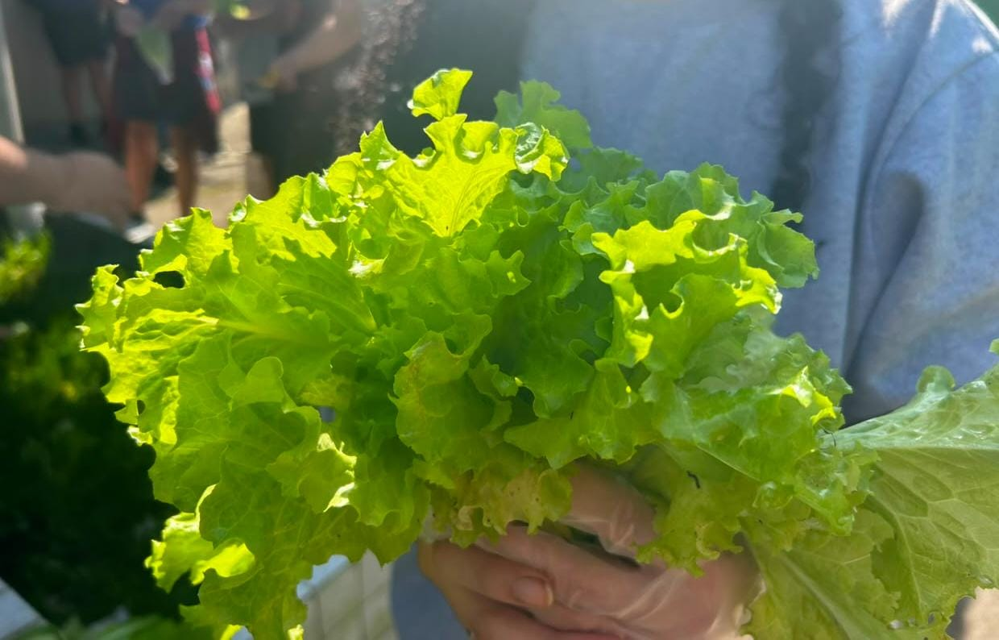
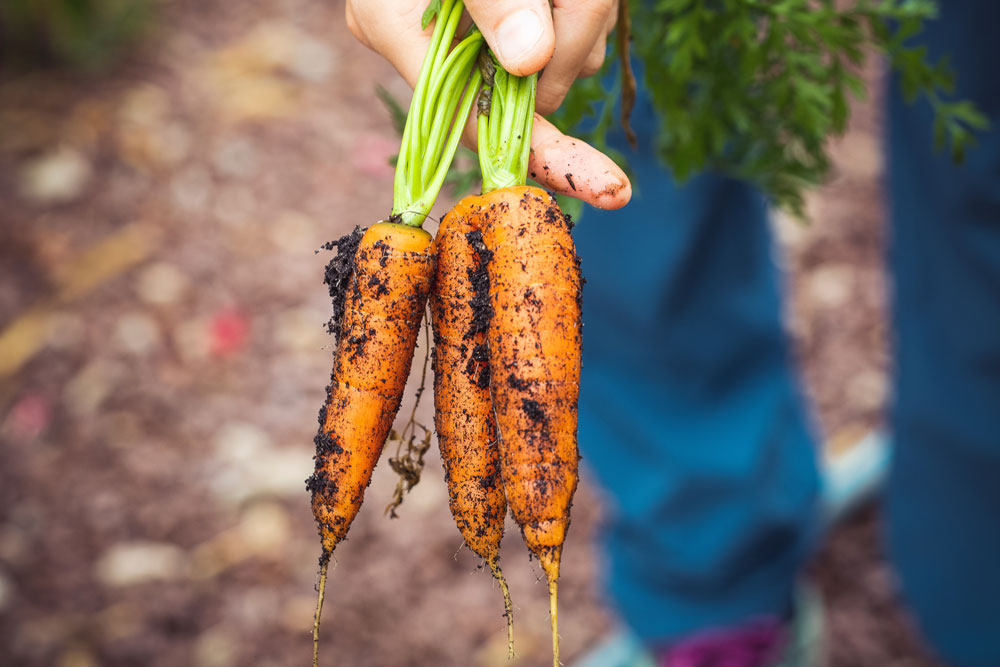
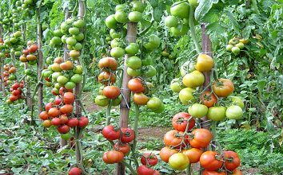
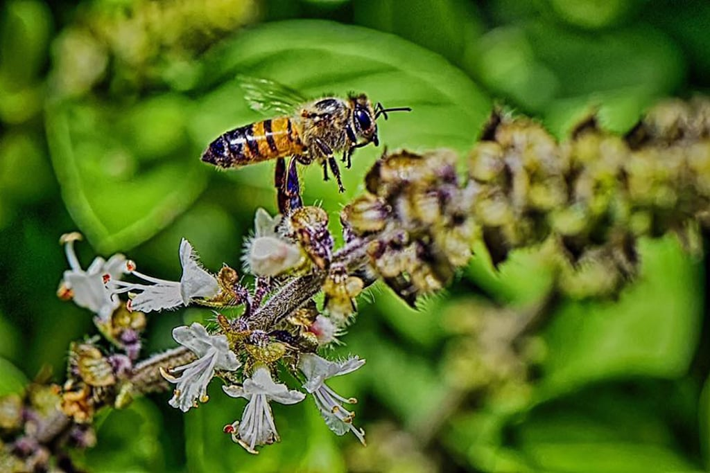
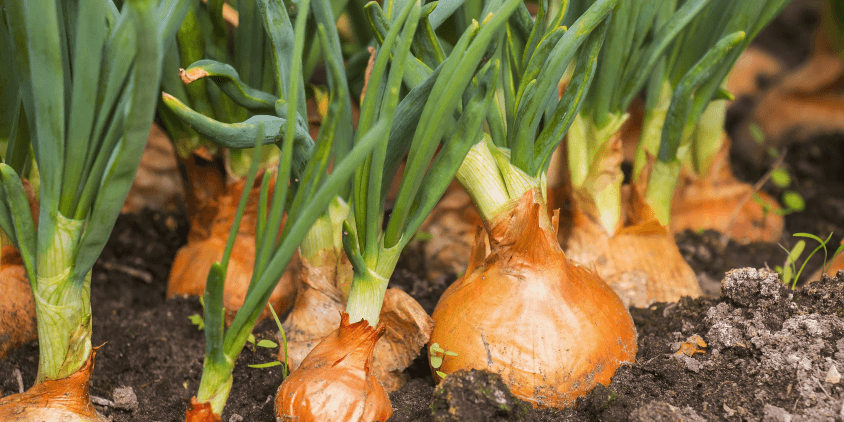

01A alface cresce rápido
A alface é uma das hortaliças que pode apresentar um crescimento relativamente rápido, dependendo das condições de solo, água, luz e temperatura.
Descubra fatos interessantes sobre os alimentos, o cultivo e a natureza que fazem parte do nosso projeto.

01A alface é uma das hortaliças que pode apresentar um crescimento relativamente rápido, dependendo das condições de solo, água, luz e temperatura.

02A parte da cenoura que normalmente consumimos se desenvolve no solo. Enquanto isso, suas folhas crescem acima da terra.

03Conforme amadurece, o tomate passa por mudanças de cor. É possível encontrar frutos verdes e vermelhos no mesmo pé em diferentes estágios de desenvolvimento.

04Alguns insetos, como as abelhas, participam da polinização das flores. Esse processo é importante para a reprodução de muitas plantas e para a formação de frutos e sementes.

05A parte que usamos da cebola se desenvolve no solo. Suas raízes ficam abaixo da terra, enquanto as folhas crescem para fora do solo.
Cuidar das plantas permite aprender sobre natureza, alimentação, sustentabilidade, responsabilidade e trabalho em equipe.
Arrecadação →Veja como nossa horta funciona e acompanhe um pouco do trabalho realizado pelo 3º Vendas.
Arrecadação →